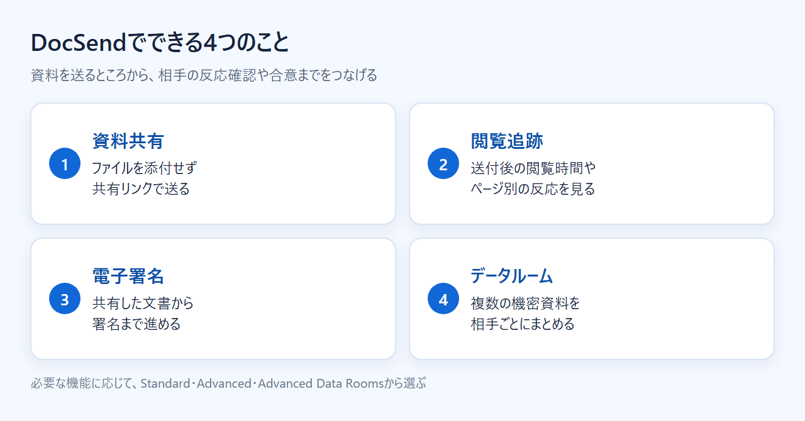
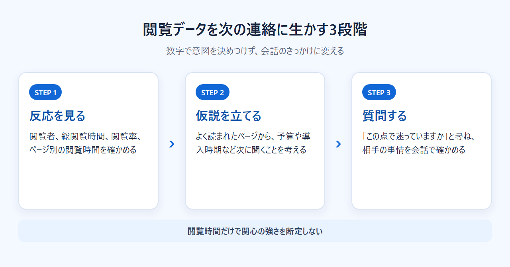

DocSendとは？資料の閲覧追跡・電子署名・データルームの違いと料金・評判・使い方
DocSendは、営業資料や機密文書をリンクで送り、送付後の閲覧状況を追えるサービスです。電子署名やデータルームも扱うため、どの機能が必要かで選ぶプランが変わります。
この記事では、各機能の違いから料金、評判、日本から契約するときの注意点まで紹介します。
DocSendとは？送付した資料を追跡して安全に共有するサービス
DocSendとは、資料をリンクで共有し、送付後の閲覧状況を追跡できるサービスです。外部へ送った後の管理に強く、Dropboxの保存・共同編集とは役割が異なります。
- 資料共有：URLで資料を送る
- 閲覧追跡：送付後の反応を見る
- 電子署名：共有した文書で署名を受ける
- データルーム：複数資料をまとめる
- 無料枠：14日間のトライアル
共有・閲覧分析・データルームの概要に加え、無料トライアルの始め方も分かります。
DocSendが向いている人・向いていない人
外部へ送った資料の反応を知りたい人や、機密資料の公開範囲を管理したい企業に向いています。社内での保存と共同編集だけなら、通常のクラウドストレージでも足ります。
DocSendでできること：共有・閲覧追跡・電子署名・データルーム
Standardは共有リンクと複数ファイル共有、電子署名に対応します。複数資料を一つの窓口にまとめるならAdvancedのSpaces、M&Aや監査で厳格に管理するならAdvanced Data Roomsが候補です。

共有リンク：ファイルを添付せずに送る
資料そのものをメールへ添付せず、URLを相手へ送る仕組みです。差し替えのたびに大きなファイルを添付し直す必要がなく、同じ共有リンクでやり取りを続けられます。
リンクには、メールアドレスの入力要求、パスコード、ダウンロードの可否、公開期限を設定できます。AdvancedとAdvanced Data Roomsでは、メール認証や許可・拒否リスト、閲覧前のAgreementも利用できます。
閲覧追跡：資料を読んだ反応を捉える
DocSendでは、共有後の閲覧状況を追跡できます。資料を送った後も相手の反応を把握し、次の連絡に生かせる機能です。
電子署名：共有から署名まで進める
Standardには、複数ファイルの共有と無制限の電子署名が含まれます。提案資料を渡した後、別の署名サービスへ移らずに合意まで進めたい場面に向いています。
Spacesとデータルーム：複数の資料をまとめる
Advanced以上にはSpacesと高度なセキュリティ機能が含まれます。資金調達などで複数資料をまとめて見せる場合は、Spacesが選択肢です。
Advanced Data Roomsは、M&Aや監査で資料群を開示する企業向けです。単一の提案資料や電子署名が目的なら、まずStandardの範囲を検討できます。
資料を送った後に分かることと、次の連絡への生かし方
DocSendの中心となる機能は、資料を送った後の反応が分かる閲覧追跡です。次の質問や連絡時期を考える材料になります。閲覧データだけで相手の意図を決めつけず、会話の糸口として扱います。

閲覧者と閲覧したタイミングを捉える
閲覧者の氏名やメールアドレスを識別するには、リンクで「Require email to view」を有効にします。設定しない場合、閲覧者は匿名となり、OSや位置情報などが手掛かりになります。
端末、総閲覧時間、閲覧率も確認できます。これらを見れば、相手が資料を開いたか、どこまで読んだかを把握できます。
連絡のタイミングは、閲覧記録だけで自動的に決めるものではありません。相手との約束や商談の進み具合も合わせて判断します。
ページごとの関心を次の質問に変える
ページ単位では、ページ番号、ページごとの閲覧時間、閲覧率を確認できます。資料全体では、上位ページや離脱率も把握できます。数字を見るだけで終わらせず、次の質問に置き換えましょう。
たとえば料金ページに関心が集まっていれば、次回は予算や契約条件を尋ねます。導入手順のページがよく読まれていれば、開始時期や社内の担当者を聞きます。閲覧データをこうした質問につなげる使い方です。
データだけで相手の意図を決めつけない
長く開かれていたページが、必ずしも相手の最重要項目とは限りません。画面を開いたまま席を離れた可能性もあり、閲覧時間だけでは理由まで分からないからです。
データは「興味があるはずだ」と断定する材料ではなく、「この点で迷っていますか」と尋ねるきっかけにします。数字をもとに会話を重ねれば、一方的な決めつけを避けてフォローできます。
共有後に追える情報の考え方と、データルームを使う場面を機能案内で確認できます。
DocSendの評判と、向いている場面・向かない場面
Capterraの公開レビューでは、共有後もファイルを管理できる点が評価されています。一方で、料金の高さや、文書が増えると画面が煩雑になる点を気にする声もあります。
良い評判：送付後の反応と共有管理が分かる
Capterraでは、更新したファイルを再送せず、同じリンクで共有を続けられる点が評価されています。パスワードなどで共有を保護できる点も好評です。
DocSendは、資料を送った後もアクセス条件や内容を管理できます。差し替えの多い提案資料や、社外秘の文書を扱う人ほど利点を感じやすいでしょう。
気になる評判：料金と画面の使いやすさを確かめたい
Capterraには、小規模チームには価格が高いという声があります。文書が増えると整理しにくいと感じる利用者もいます。AdvancedとAdvanced Data Roomsは3ユーザー込みなので、1人で使う場合は必要な機能との釣り合いを見ます。
使い勝手は、14日間のトライアルで確かめられます。資料の登録から共有、閲覧状況の確認までをひと通り試すと、自分の仕事に合うか判断しやすくなります。
DocSendが向く場面・別の方法で足りる場面
既存資料を送り、閲覧後の反応まで追う仕事にはDocSendが合います。資料を一から作ることが中心なら、作成機能を持つPandaDocなども比較対象です。
保存と共同編集だけなら、既存のクラウドストレージを続ける方が単純です。外部共有後の管理まで必要になったとき、DocSendを導入する意味が出てきます。
DocSendの料金と14日間の無料トライアル
公開料金表の有料プランはStandard、Advanced、Advanced Data Roomsの3つです。通常のFreeプランは掲載されておらず、新規登録はカード不要の14日間トライアルから始まります。
3つの有料プランは必要な機能と人数で選ぶ
- Standard：1ユーザー単位。複数ファイル共有と電子署名に対応
- Advanced：3ユーザー込み。Spacesと高度なセキュリティを利用可能
- Advanced Data Rooms：3ユーザー込み。データルームを重視する企業向け
各プランには月払いと年払いがあります。具体的な金額や支払い周期による差は、料金記事でまとめています。
無料トライアルで試せる範囲
14日間のトライアルはクレジットカード不要です。終了時にカードを登録していなければ、無料のLimited Trialへ移ります。
Limited Trialでは、リンクは10件、同時に保存できる文書は5件、文書ごとの閲覧は2件までです。プレミアム機能を使ったリンクは無効になるため、本番の共有リンクを作る前に契約予定を決めておきましょう。
料金ページでは月払いと年払いを切り替え、3ユーザー込みの上位プランとStandardを見比べられます。
日本語対応・支払い・解約で確認したいこと
DocSendは日本語UIに対応し、日本語の公式ページとヘルプセンターもあります。問い合わせ窓口は用意されていますが、担当者が日本語で回答するかは公式に明記されていません。
日本語の公式情報とサポート窓口
料金ページとヘルプセンターは日本語で読めます。管理画面も、公式の対応言語に日本語が含まれています。
問い合わせフォームには日本語ページがあります。ただし、有人サポートの回答言語は公開情報から確認できません。
日本からの支払いと請求書
公式ヘルプでは、Visa、Mastercard、American Expressを含む主要クレジットカードに対応しています。日本発行カードとJCBを利用できるかは、確認できていません。
Account Ownerは、BillingのPayment Historyから請求書をメールで取得できます。請求書は自動送付されません。請求書払いの可否は公開情報から確認できないため、必要な場合は契約前に問い合わせましょう。
消費税や適格請求書の扱いが経理処理に影響する場合は、契約前に税理士へ確認してください。
解約と自動更新
セルフサービス契約は自動更新です。解約するときは、更新前にBillingから手続きします。現在の契約期間が終わると解約が有効になり、料金は法令などによる場合を除いて返金されません。
トライアルだけで終える場合も、カード登録の有無と、作成した共有リンクがどう変わるかを確かめておくと混乱を防げます。
日本語の料金ページで条件を確かめ、不明なカードや請求書の扱いは申込前に問い合わせられます。
DocSendの使い方：アップロードから閲覧分析まで
基本の流れは、資料のアップロード、共有条件の設定、リンク送付、閲覧状況の確認という4段階です。まず全体の流れを押さえ、画面ごとの操作は詳しい手順記事で確認します。
資料をアップロードする
最初に、外部へ送る資料をDocSendへ登録します。差し替えが発生する資料は、社内の原本と送付用の版を区別しておくと取り違えを防げます。
共有リンクとアクセス条件を設定する
登録した資料から共有リンクを作り、相手へ渡す条件を決めます。メールアドレスの入力、パスコード、ダウンロードの可否、公開期限を設定できます。
Advanced以上では、メール認証や許可・拒否リスト、閲覧前のAgreementも選べます。機密度と相手の手間を考え、必要な条件だけを設定しましょう。
相手にリンクを送る
作成したURLをメールや商談後の連絡で送ります。本文には、資料の内容と返答をお願いしたい期限を添えると、相手も次の行動を判断できます。
閲覧状況を見て次の連絡を考える
送付後は、総閲覧時間や閲覧率、ページごとの閲覧時間を見ます。上位ページや離脱率も参考にし、次に聞く内容を決めましょう。
記録だけで意図を断定せず、よく読まれた内容について質問する材料として使います。
DocSendとPandaDocは何を中心に使うかで選ぶ
送付後の閲覧追跡とデータルームを重視するならDocSend、提案書の作成と電子署名が中心ならPandaDocが候補です。料金だけで比べず、資料を作るところから始めるのか、送った後を管理したいのかで選ぶと分かりやすくなります。
DocSendが向く人：閲覧追跡とデータルームを重視する
DocSendは、資料を送った後の反応を知りたい人や、Spaces・データルームで複数資料をまとめたい人に向きます。通常のFreeプランは公開料金表にありませんが、カード不要の14日間トライアルがあります。
閲覧追跡、Spaces、データルームの説明をたどり、自社の共有方法に必要かを見極められます。
PandaDocが向く人：提案書作成と電子署名を重視する

PandaDocは、テンプレートから提案書を作り、電子署名まで進めたい人向けです。Free eSignは0ドルで、年間60文書、1文書あたり受信者2人、テンプレート5件まで使えます。
管理画面と受信者画面の公式対応言語に日本語は含まれません。支払いはVisa、Mastercard、American Express、PayPalに対応していますが、JCBは確認できていません。
無料の電子署名枠と、有料プランの文書作成機能を料金ページから比べられます。
まとめ：資料を送った後の反応まで見たいならDocSend
DocSendは、資料を安全に送り、送付後の反応を追い、電子署名やデータルームまで広げたい人に合います。保存と共同編集だけで足りる場合や、提案書作成が中心の場合は、別の方法も比べましょう。
- DocSendを試す：閲覧追跡やデータルームが必要
- PandaDocも比べる：提案書作成と電子署名が中心
- 既存の共有方法を続ける：社内保存と共同編集だけで足りる
カード不要の14日間トライアルで、資料の共有から閲覧状況を見るまでの流れを試せます。